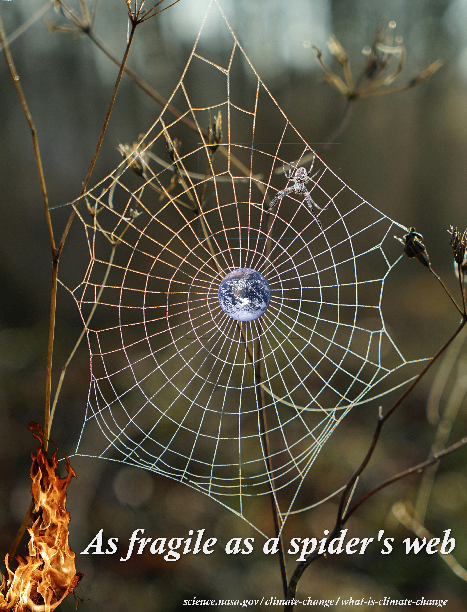

Visual Arugument Project

Audio Narrative Project

This is an audio narrative project that I completed for my Composing Digital Media class in Spring 2025.
For more information on my project please Visit my AudioNarrative Github Repo.
This is a visual argument project that I completed for my Composing Digital Media class in Spring 2025.
For more information on my project please Visit my Visual Argument Github Repo.